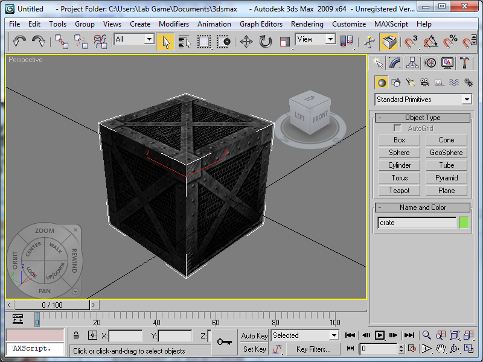

Autodesk 3ds Max โดยชื่อเดิมคือ 3D Studio MAX เป็นซอฟต์แวร์เพื่องานกราฟิกส์สามมิติจากบริษัทออโตเดสก์ด้านกราฟิกส์สำหรับงานทางด้าน โมเดล 3 มิติ และ แอนิเมชัน ในเกมนี้ได้ใช้ Autodesk 3ds Max 2009 เป็นตัวสร้างโมเดลหลักๆ แล้ว Export ไปยัง Visual Studio เพื่อสร้างเกมโดยใช้ OpenGL
โดยการ Export ไฟล์จาก Autodesk 3ds Max ลงมาบน openGL สามารถศึกษาได้จาก http://www.3dcodingtutorial.com/working-with-3d-models/exporting-the-model.html

- ตัวอย่างโมเดล .obj คลิกดาวน์โหลด